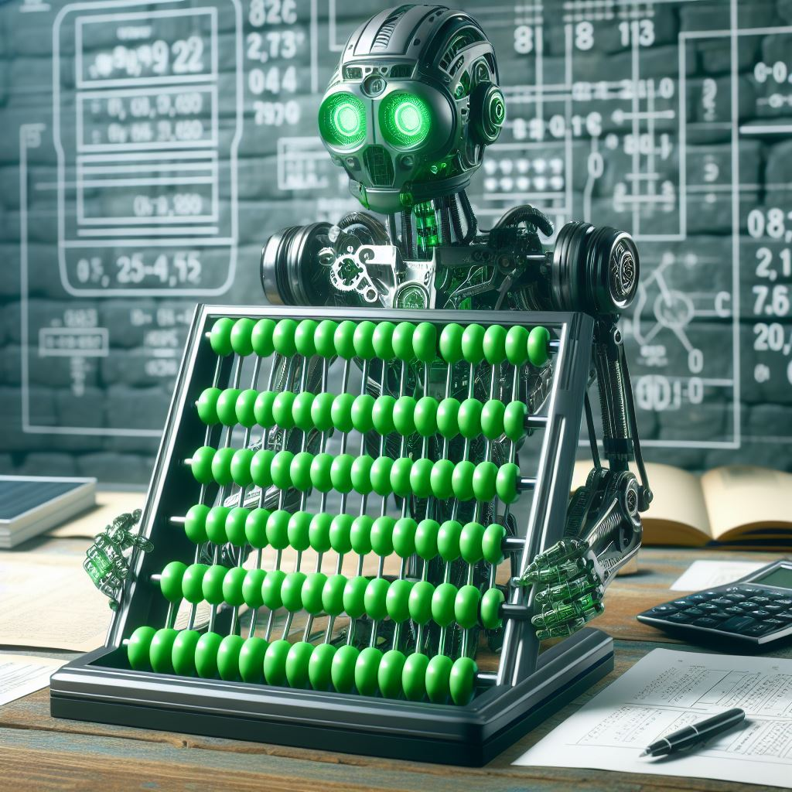
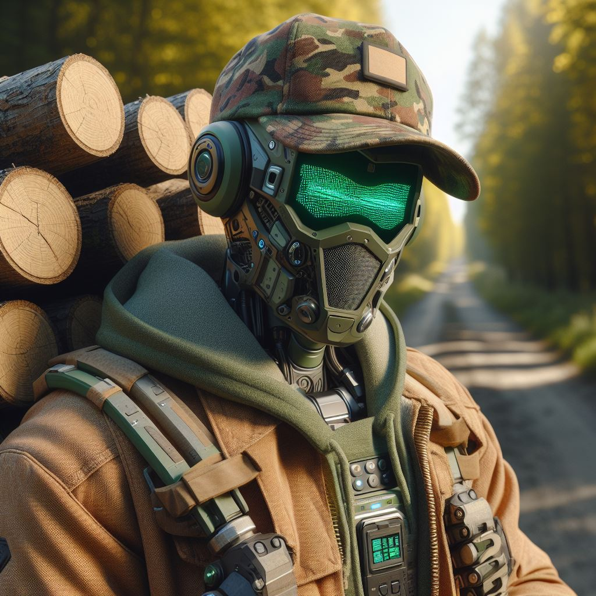

Features
Personal and server-wide configurations, so you can customize bot functions for your server, and each user can customize their specific interactions!
An advanced filter to remove any bad words from your server, configurable to censor messages instead of just deleting them.

Starboard is like a highlights reel of the best messages, where members can react to a message with a customizable reaction and if a configurable threshold is met, the bot will post it to the designated channel. Complete with tracking any edits or deletions over time.
Moderator actions can be handled through Stewbot instead, allowing for better logging of any actions taken. The actions that can be carried out through Stewbot include Timeouts, Bans, Kicks, and Message Deletions. Stewbot also features the ability to anonymously message a user in no name other than the server's to allow for better warnings!

Some servers like to have a channel where users can consecutively count up from a number infinitely - Stewbot is able to manage this with lots of customization on how he handles it!

Auto roles allow for users to self-assign special roles! These can be pingable roles such as opt-in announcements, marker roles to show an interest, roles to allow or remove access to channels, change the color of names, whatever! Stewbot allows for an easy interface for this.
Stewbot has a ticket system available which allows for moderators and users to setup a private interface to discuss issues!
Auto join messages allow you to let users know how the server works and what to do in them - Stewbot allows you to customize where, what, and it's in the server's name, not the bot's, allowing for a more professional delivery!

Stewbot features advanced logging of any changes that moderators may need to be aware of to keep things clean and safe for members

Maybe you restrict users through roles, and leaving and rejoining will reset the roles they have. With Stewbot's Sticky Roles, you can make it so any and all roles they had when they left are reapplied upon entry!

Need to apply one or more roles to all new users when they join? Stewbot has you covered!

Stewbot features the ability to use AI Image Creation tools straight from Discord, allowing for images of people who never walked this earth or images from prompts using Dall-E Mini (Craiyon).

Stewbot has lots of conversation starters packed in! Hundreds of approved clean memes, and randomly generated Would-you-Rather questions and jokes!

Stewbot features fun RNG features such as coin flipping, random numbers, and Magic 8-Ball responses!

Need to make and run a poll? Stewbot has a super simple interface to do this and provide cool pie charts of responses!
Stewbot also has the ability to provide definitions, translate to and from other languages, and look for verses in the King James Bible!

Stewbot has a whole personality of his own! Using AI, Stewbot will respond to anything when pinged. Don't want him to respond? You can turn this off in the server or personal configurations!